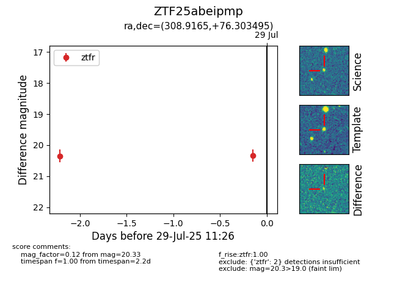

Target ZTF25abeipmp at 2025-07-29 11:26, see:
FINK: fink-portal.org/ZTF25abeipmp
Lasair: lasair-ztf.lsst.ac.uk/objects/ZTF25abeipmp
ALeRCE: alerce.online/object/ZTF25abeipmp
alt names
ZTF25abeipmp (ztf,fink)
coordinates:
equatorial (ra, dec) = (308.9165,+76.30350)
galactic (l, b) = (109.8046,+20.51488)
photometry
last ztfr=20.33
2 ztfr detections
